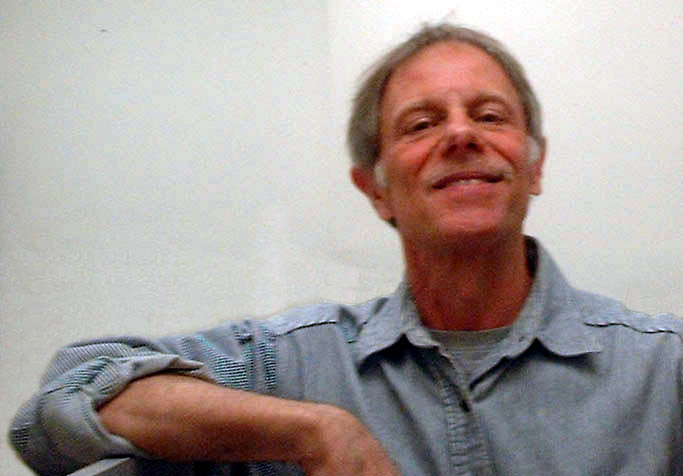

Last update: Thu Jun 30 08:16:57 2022
Translate:
Search:
[ View images ]

Frank da Cruz, formerly:
Director, Communications Software Development
Columbia University Information Technology (CUIT)
Columbia University
612 West 115th Street
New York NY 10025
USA
Retired since 1 July 2011.
Director, Communications Software Development
Columbia University Information Technology (CUIT)
Columbia University
612 West 115th Street
New York NY 10025
USA
Retired since 1 July 2011.
Before that: US Army, musician, NYC yellow taxi driver; programmer,
sysadmin, etc.
BS Columbia 1970; MS Columbia Engineering 1977.
Presently: National Associate (for the Bronx), Living New Deal, University of California at Berkeley.
BS Columbia 1970; MS Columbia Engineering 1977.
Presently: National Associate (for the Bronx), Living New Deal, University of California at Berkeley.
RECENT:
- Белое злато - 1 September 2022.
- C-Kermit 10.0 for Microsoft Windows (with new SSH client) in Beta test, 17 July 2022.
- NYC New Deal Highlights photomontage (loads much faster as of 7 July 2022).
- C-Kermit 10.0 preview, June 2022.
- Youtube video: Williamsbridge Oval, Bronx, NY, May 2022.
- The Columbia University Kermit website (frozen in 2011) is having its many FTP links converted to HTTP (by me), May-October 2021.
- The Columbia University Computing History website — all 700+ pages of it — has been brought into compliance with current HTML and "responsiveness" standards (6 April 2021)
- The Washington DC National Mall in World War II (19 March 2021)
- Kermitproject.org website is now encrypted (16 February 2021)
- Hall's Hill, Arlington VA, 1956-61: The Segregation Wall (19 January 2021)
- Now Or Never: A New New Deal (10 November 2020).
- Victor Grossman books, review of two books about East Germany (3 September 2020).
- Frankfurt, Germany: Prewar, wartime, and postwar image gallery (6 May 2020).
- Bainbridge Avenue businesses, Bronx NY, in the COVID-19 epidemic (May 2-3, 2020).
- Translations of Kermit, New Deal, and computer history pages into many languages (2013-2022)
- Aymar Embury II — Forgotten architect of the NYC New Deal (November 2019)
Security Notice: This is a read-only website and does not need to be encrypted because it does not collect any information from readers. In any case, Columbia University is in the process of converting all the websites within its domain (including this one) to HTTPS; one day it will happen but progress is slow due to the COVID virus. The new Open-Source Kermit Project website, which includes the New York City New Deal website, was converted to HTTPS: on 16 February 2021.
The Kermit Project
Data communications protocol and software project founded in 1981:- C-Kermit development
- C-Kermit 10.0 Beta test (May 2022)
- Kermit's Fortieth Anniversary, 19 April 2021
- https://kermitproject.org/fortieth.html
- At the Computer History Museum:
-
Kermit
Project Oral History Panel (Jeffrey Altman, Bill Catchings, Frank da Cruz)
MS-DOS Kermit Oral History (Joe Doupnik)
Kermit Project Document Archive (16 boxes of fun)
Other computer museum contributions - Online Archive of California
- Guide to the Frank da Cruz Kermit records
- The New Open Source Kermit Project (2011-present)
- Home page: https://www.kermitproject.org
What Is Kermit?: https://kermitproject.org/kermit.html
Timeline: https://kermitproject.org/timeline.html
Current software archive: https://kermitproject.org/archive.html
C-Kermit for Unix and VMS: https://kermitproject.org/ckermit.html
Kermit 95 for Windows: https://kermitproject.org/k95.html
E-Kermit for embedding: https://kermitproject.org/ek.html
The Kermit scripting language: https://kermitproject.org/ckscripts.html
Books: https://kermitproject.org/books.html
Bibliography: https://kermitproject.org/biblio.html - The Original Kermit Project - Columbia University (1981-2011)
- This site was frozen by Columbia U in 2011.
Home page: http://columbia.edu/kermit/
Complete software archive as of 2011: http://columbia.edu/kermit/archive.html
C-Kermit binaries versions 5A–9.0: (1992-2011) http://www.kermitproject.org/ckbinaries.html
Brief history: https://kermitproject.org/dec20.html#kermit - International Kermit Conference, Moscow USSR 1989
- Gallery: http://columbia.edu/cu/computinghistory/ussr/.
I was laid off from Columbia U in 2011. My last day was June 30th, 2011, and then I spent the next 3 months cleaning up:
- Disposing of my books, manuals, and other historical items, a surprisingly big job. The list alone was a big job... The historical records of the Kermit Project are now at the Computer History Museum, along with some artifacts.
- Releasing open-source versions of C-Kermit, E-Kermit, and Kermit 95.
- Cataloging the Kermit software archive.
Columbia University Computing History
- History of Computing at Columbia University (1879-2019)
- http://columbia.edu/cu/computinghistory/
- Computing at Columbia (Columbia 250, 2004)
- http://c250.columbia.edu/c250_perspectives/write_history/61.html
- Wallace Eckert, Computer Pioneer (Columbia 250)
- http://c250.columbia.edu/c250_celebrates/your_columbians/wallace_eckert.html
- The DECSYSTEM-20 at Columbia University (1977-1988)
- https://kermitproject.org/dec20.html
- Watson Lab Conduit Trenching (May 1985)
- http://columbia.edu/cu/computinghistory/conduit
Other Computing Topics
- MM: The 1980s-era email client that I used and maintained until 2015
- http://www.kermitproject.org/mm/
- What Is a Terminal?
- http://www.kermitproject.org/terminals.html
- Safe Network Computing - Windows Desktop (2001)
- http://columbia.edu/kermit/safe.html
- Programming Language Survey (1980)
- http://www.columbia.edu/kermit/ftp/dec20/languages.info
New York City
- New Deal Projects in New York City (2012-present)
- https://kermitproject.org/newdeal/
Photo galleries, tables, narrative. Mainly the Bronx but also some sites in other boroughs, with side trips to Virginia and New Mexico.
- Williamsbridge Oval Park — 80th Anniversary of a WPA creation (2017)
- https://kermitproject.org/bronx/ovalpark80/
- Aymar Embury II - The real Master Builder of the Great Depression
-
https://kermitproject.org/newdeal/embury/article.html (profile)
https://kermitproject.org/newdeal/embury/ (list of projects)
https://kermitproject.org/newdeal/embury/gallery/ (photo gallery of projects) - Bronx Photo Gallery (2012-present) (Also available as a slide show)
- https://kermitproject.org/bronx/
- Bronx Day Parade and Festival galleries (2014-present)
- http://columbia.edu/~fdc/bronxday/
- University Food Market (1957-2003)
- http://columbia.edu/~fdc/ufm.html/ (English)
http://columbia.edu/~fdc/ufm-es.html/ (Spanish) - Samad's Deli (photos from 2012-14)
- http://columbia.edu/~fdc/Samad
- La Rosita (December 2006)
- http://columbia.edu/~fdc/larosita.html
- Upper Manhattan Running Zone (last update: July 2014)
- http://columbia.edu/~fdc/running/
- Columbia University Area Photos
- http://columbia.edu/~fdc/uws20120914/ (September 2012)
http://columbia.edu/~fdc/uws20120915/ (September 2012)
http://columbia.edu/~fdc/cu/200204/ (April 2002)
http://columbia.edu/~fdc/cu/200212/ (December 2002)
Countries, Languages, Character Sets
- Translations of Kermit, computer history, New Deal pages into different languages
- https://kermitproject.org/translations.html
- Frank's Compulsive Guide to International Postal Addresses (1988-present)
- http://columbia.edu/~fdc/postal/
- UTF-8 Sampler (text in many languages) (2000-present)
- http://www.kermitproject.org/utf8.html
- Say PEACE In All Languages! (March-April 2003)
- http://columbia.edu/~fdc/pace
- Representing Middle English Manuscripts on the Web with UTF-8 (August 2002)
- https://kermitproject.org/st-erkenwald.html
- Interchange of Non-English Computer Text (1994)
- https://kermitproject.org/accents.html
- HTML (Web-page) sample and tutorial (for making simple Web pages "by hand")
- http://columbia.edu/~fdc/sample.html
Germany
- Frankfurt American High School, Army-brat history from the 1950s and 60s (2003-present)
- http://columbia.edu/~fdc/family/frankfurt.html
(narrative: work in progress, currently about 62 pages)
http://columbia.edu/~fdc/frankfurt/ (gallery, mostly from 2003-2006) - Berlin 1959 Gallery
- http://columbia.edu/~fdc/germany/berlin1959/
- Berlin 1961-62 Gallery
- http://columbia.edu/~fdc/germany/berlin1961/
- Army - Kaiserslautern and Stuttgart - 1963-66 Gallery
- http://columbia.edu/~fdc/army
http://columbia.edu/~fdc/family/army.html (narrative: new May 2019) - East Germany Reconsidered - Books by Victor Grossman
- http://columbia.edu/~fdc/germany/grossman.html
- Messerschmitt Kabinenroller (und andere Kleinwagen) (1954)
- http://columbia.edu/~fdc/frankfurt/messerschmitt.html
- BMW R-26 (1956)
- http://columbia.edu/~fdc/frankfurt/bmw-r26.html
Politics
Note: I'm a Viet-Nam era Army veteran as well as a military brat, and both my parents were World War II veterans.- Now Or Never: A New New Deal (10 November 2020).
- https://kermitproject.org/newdeal/newnewdeal.html
- Columbia University 1968 (the student uprising)
- http://columbia.edu/cu/computinghistory/1968/index.html
- Recent USA presidential elections
- http://columbia.edu/~fdc/election2020.html
- Don't Trust Anyone Under 50! (Columbia 250, 2004)
- http://c250.columbia.edu/c250_perspectives/write_history/282.html
Virginia
- Chesterbrook, Virginia, 1947-55 (narrative, work in progress, about 14 pages )
- http://columbia.edu/~fdc/family/chesterbrook.html
- Photos of Chesterbrook, Virginia, 1947-55 (gallery, 2014)
- http://columbia.edu/~fdc/virginia
- New Deal Projects in Virginia (2017-2020)
- https://kermitproject.org/newdeal/virginia/
Family history
- International research project into my Portuguese, Norwegian, and German/Swiss families, my ex-wife's African-American family, and my cousins' Lebanese and Palestinian families, with a large family tree going back many generations:
- http://columbia.edu/~fdc/family/
- Index to individual chapters:
- http://columbia.edu/~fdc/family/#chapters
Books
- Kermit, A File Transfer Protocol, Digital Press (1987), 379pp; with Foreword by Donald Knuth. In print for 14 years. A Russian edition by the USSR Academy of Sciences was in preparation when the Soviet Union collapsed and was therefore never published (see sample chapter).
- "Using C-Kermit" (with C. Gianone), Digital Press (1992, first edition), 514pp.
- Using C-Kermit (with C. Gianone), 2nd Ed, Digital Press (1997), 622pp.
- C-Kermit: Einführung und Referenz, Verlag Heinz Heise, Hannover (1997). With Christine M. Gianone, German translation by Gisbert W. Selke.
- Kermit 95 (with C. Gianone), Manning Publications (1996), 88pp. Reissued periodically until 2003 in updated electronic editions.
Other publications (and semi-publications)
Also see: Kermit Bibliography and Kermit Project Books Online.- What's The Difference?, with Charles Harris, Reading is Fundamental (1970).
- Countless articles in the Columbia University Computer Center Newsletter (which changed its name about 100 times over the years) and other Computer Center publications, 1975-2003.
- DECSYSTEM-20 Assembly Language Guide (with Chris Ryland), July 1980 (unfinished).
- Numerous articles in Kermit News, the journal of the Kermit Project, 1986-93.
- Kermit, A Simple File Transfer Protocol for Microcomputers and Mainframes (with Bill Catchings), BYTE Magazine, June and July 1984.
- A series of articles about digital PBXs in McGraw-Hill Data Communications magazine (with C. Gianone), 1987-88.
- “Circumnavigating the Web with MS-DOS Kermit”, On The Internet, Internet Society, Vol.1 No.2 (May/June 1995), pp.48-52.
- "Columbia 1968", Columbia Librarian, V.XXVII, 1-2, Fall-Winter 1999, and on the Web (in much-expanded form) at http://columbia.edu/cu/computinghistory/1968.html.
- Forewords and Prefaces in various data communication and networking books, e.g. Quarterman's The Matrix, and listed in the acknowledgements of many others, e.g. McNamara's Technical Aspects of Data Communications and The Unicode Standard Version 3.0, The Unicode Consortium, Addison-Wesley (2000).
- Supplemental Terminal Graphics for Unicode, UTC Document L2/00-159 / ISO WG2 Document N2265, 31 March 2000: 18 characters added in Unicode 3.2 and ISO/IEC ISO 10646-1:2000/Amd.1.
- Internet RFC 2839 (with J. Altman), May 2000.
- Internet RFC 2840 (with J. Altman), May 2000.
- A photo credit in Fortune Magazine (Jaquard loom), China edition, August 2001.
- "Columbia University Computing History", IEEE Annals of the History of Computing, V24#2, April-June 2002 (Abstract) and on the Web at http://columbia.edu/cu/computinghistory/
- Credits in Stand Columbia, Columbia University Press (2003), a history of Columbia University by Robert McCaughey, for contributions on computing and the 1968 student uprising.
- A photo credit in the book John Lennon: All I Want Is the Truth by Elizabeth Partridge (2005) (for this photo).
- Pictured on front page of ComputerWorld, July 4, 2005, (mis)quoted in accompanying article "Love that Legacy" by Gary Anthes).
- Feature article in Frankfurter Neue Presse, 22 July 2006: "Warum Frank aus N.Y. nicht von Frankfurt lassen kann" by Inga Schulze
- Photo credit in the book American Military Communities in West Germany by John W. Lemza, McFarland and Company (2006), p.42.
- A photo credit in the book Berlin Mitte und die Welt – wie sie einmal war 1914-1989, P.J. Ortmann (self-published 2009).
- Photo credit, front page, Norwood News, December 10-23, 2015.
- “The History of the World in One Mural”, Living New Deal, University of California at Berkeley, August 28, 2015.
- “Discovering New Deal New York”, Fall 2015 Newsletter, Living New Deal, University of California at Berkeley.
- “Fifty Years Ago”, The Veteran, Vietnam Veterans Against the War, Vol.46, No.1, Spring 2016.
- New Deal New York — fold-out map of New Deal sites in New York City, The Living New Deal, University of California at Berkeley (2017), with Richard Walker, Evan Kalish, Shaina Potts, Linda Herman, Molly Roy, and Susan Ives (Evan and I supplied most of the data). Also available as a poster.
- “Acknowledge Oval Park's Milestone”, Norwood News, Vol.30, No.13, June 22 - July 5, 2017 [HTML] [PDF] [Original]. This article resulted in Park's the 80th Annniversary celebration on September 9, 2017, and the first public recognition by the Parks Department of the WPA's role in creating the park.
- Photo credits: Brechin, Gray, “Playing Through: Recreation and the New Deal”, Summer 2017 Newsletter, Living New Deal, University of California at Berkeley.
- New Deal Art Experts Say Painting Over Mural Was Vandalism, Associated Press article in the New York Times, 16 June 2018, relating to the New Deal mural at DeWitt Clinton High School in the Bronx that had been partially painted over, result of a half-hour AP interview with me (among other interviews), plus photo credits. Also at NBC News, ABC News, the Washington Post, the London Daily Mail, the Chicago Tribune, LA Times, and several thousand other sites.
- A historic decades-old mural was painted over at a New York high school during a repair project, CNN, based on a June 18, 2018, interview.
- De Witt Clinton HS painters destroy major art piece, Bronx Times, 24 June 2018, by Alex Mitchell, based on interviews with Gray Brechin and me (unfortunately, it says "PWA" everywhere it should say "WPA").
{kind=link}
{kind=link}
Recipes
Miscellaneous
- Milestones in the Annals of Junkmail (July 2002)
- http://columbia.edu/kermit/george.html
- No Wax Please!
- http://columbia.edu/~fdc/nowax.html
| Frank da Cruz / fdc@columbia.edu | [validate] |